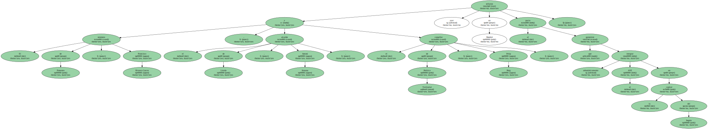
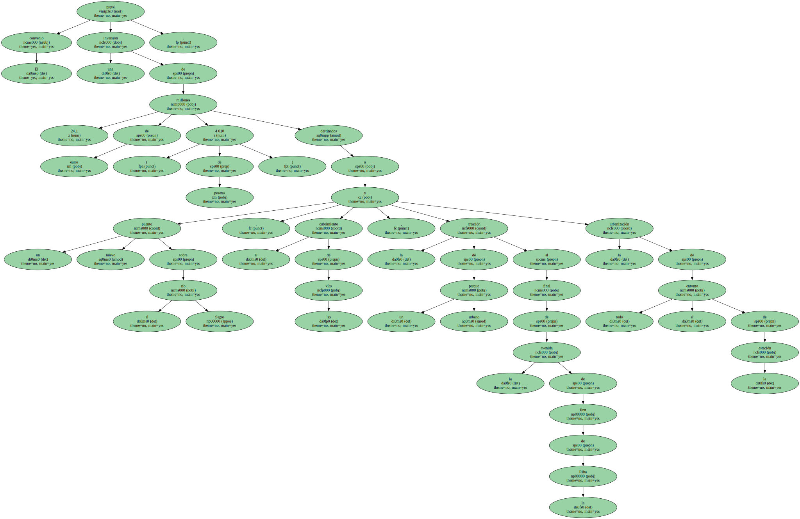
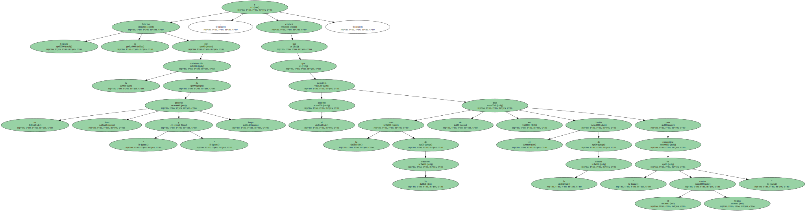
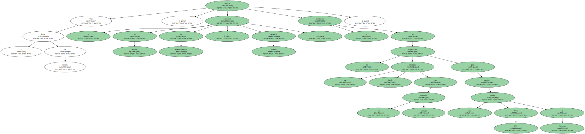
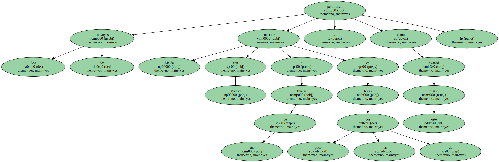

El ministro de Fomento , Francisco Álvarez-Cascos , el alcalde de Lleida , Antoni Siurana , y el conseller de Política Territorial , Felip Puig , sellaron ayer en Madrid el pacto que permitirá integrar urbanísticamente el AVE en la capital del Segrià.
El convenio prevé una inversión de 24,1 millones de euros ( 4.010 de pesetas ) destinados a un nuevo puente sobre el río Segre , el cubrimiento de las vías , la creación de un parque urbano al final de la avenida de Prat de la Riba y la urbanización de todo el entorno de la estación.
Los 24 millones de euros se obtendrán de las plusvalías generadas en los terrenos que ya resultan innecesarios para la explotación ferroviaria.

Siurana se felicitó por la culminación de un proceso " duro y largo " , y explicó que el acuerdo permitirá que la zona de la estación deje de ser el límite de la ciudad para convertirse " en el mismo centro ".
Tras la firma del convenio , el secretario de Estado de Infraestructuras , Benigno Blanco , anunció la conclusión de la negociación que mantenía Renfe con su homóloga alemana para alquilar dos trenes AVE IC3 de Siemens.
Los dos convoyes permitirán conectar Lleida con Madrid a finales de año en poco más de dos horas , como avanzó este diario.
